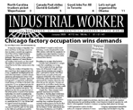
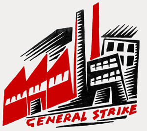
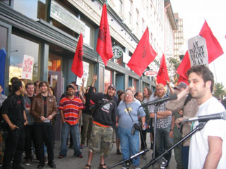

Submitted on Tue, 12/30/2008 - 4:10pm

Headlines:
- Chicago factory occupation wins demands
- N. Carolina IWW truckers picket Weyerhauser
- Good Jobs For All stands up for temps in Toronto
Features:
- Can we rebuild the labor movement with the Employee Free Choice Act?
- Let's not get organized by Barack Obama
- Review: Staughton Lynd tackles Wobblies and Zapatistas
Download a free
PDF copy of this issue.
Submitted on Wed, 12/24/2008 - 4:12am
For Immediate Release:
Starbucks Workers Union (Industrial Workers of the World)
Contact: StarbucksUnion (at) yahoo.com
Judge Finds Starbucks Guilty of Extensive Union-Busting
The IWW Scores Big Victory Over Global Coffee Chain
New York, NY (Dec. 23, 2008)- Following a lengthy trial here last year, a
National Labor Relations Board judge has found Starbucks guilty of extensive
violations of federal labor law in its bid to counter the IWW Starbucks Workers
Union. In an 88-page decision, Judge Mindy E. Landow found, among other things,
that Starbucks maintained multiple policies which interfered with workers' right
to communicate about the union and about working conditions; terminated three
workers in retaliation for union activity; and repeatedly discriminated against
union supporters. The decision comes despite a 2006 New York settlement in
which Starbucks pledged to stop illegal anti-union activities and mirrors
federal government action against the company for its conduct toward baristas in
Minnesota and Michigan.
"The judge's decision coupled with previous government findings expose
Starbucks for what it is --- a union-busting corporation that will go to
staggering lengths to interfere with the right to freedom of association," said
Daniel Gross, a barista and member of the IWW Starbucks Workers Union found to
have been unlawfully terminated by the coffee giant. "In these trying economic
times of mass layoffs and slashed work hours, it's more important than ever that
Starbucks and every corporation is confronted with a social movement that
insists on the right to an independent voice on the job."
The Board decision is the latest blow against a company that has
experienced a stunning fall from grace. From a precipitous decrease in customer
demand to its increasingly tattered socially responsible image, the myriad of
challenges facing Starbucks has resulted in the company losing over half its
value from just a year ago. The decision also represents a significant victory
for the IWW Starbucks Workers Union which continues to grow across the country
with baristas taking creative and determined actions to improve the security of
work hours and win respect on the job. Starbucks faces another Labor Board
trial next month in Grand Rapids, Michigan over illegal union-busting.
Submitted on Mon, 12/22/2008 - 2:52pm

Posted in Solidarity:
On the morning of Wed. (17 December 2008), the offices of the G.S.E.E. (at
the intersection of Patision St. and Alexandras St.) were occupied by insurgent
workers and the building was declared a liberated workers' zone. Their
declaration speaks of their wish "[t]o disperse the media-touted myth that the
workers were and are absent from the clashes, and that the rage of these days
was an affair of some 500 "mask-bearers," "hooligans" or some other such fairy
tale, while on the T.V. screens the workers were presented as victims of the
clash, while the capitalist crisis in Greece and worldwide continues to lead to
countless layoffs that the media and their managers portray as a "natural
phenomenon"."
Communique #1 (17 December 2008):
We will either determine our history ourselves or let it be determined
without us.
We, manual workers, employees, jobless, temporary workers, local or
migrants, are not passive T.V. viewers. Since the murder of Alexandros
Grigoropoulos on Saturday night, we participate in the demonstrations, the
clashes with the police, the occupations of the centre or the neighborhoods.
Time and time again we had to leave our jobs and our daily obligations to take
the streets with the students, the university students and the other
proletarians in the struggle.
WE DECIDED TO OCCUPY THE BUILDING OF G.S.E.E.
-- To turn it into a space of free expression and a meeting point of
workers.
-- To disperse the media-touted myth that the workers were and are absent
from the clashes, and that the rage of these days was an affair of some 500
"mask-bearers," "hooligans" or some other fairy tale, while on the T.V. screens
the workers were presented as victims of the clash, while the capitalist crisis
in Greece and worldwide continues to lead to countless layoffs that the media
and their managers deal as a "natural phenomenon".
Submitted on Mon, 12/22/2008 - 2:45pm
As members of the Starbucks Workers Union, we believe that the need for
workplace organizing is greater than ever before ; behind each shiny
logo lies a potential struggle. Since the mid-1970s bosses have been on
the offensive : battering workers with inflation, union busting,
outsourcing, industrial restructuring, and the destruction of the last
shreds of the social safety net. The result of these shifts can be
summed up as the rise of "precarity" as the defining fact of life for
an ever-growing section of the working class.
The Precariat : An Impossible Class
More than anything, precarity describes the everyday life experience of
workers in the corporate chains. It is simply impossible to make a life
for yourself working one of these jobs. Because of the lack of union
organization in these industries, we are almost all legally classified
as "At Will" employees. This means that under U.S. labor law, we can be
fired for no reason. The threat of firing, however, is only the least
subtle of many mechanisms used by management to control us.
At Starbucks, many workers have difficulty budgeting or planning ahead
because our work hours fluctuate wildly from week to week. The company
uses a computer system to determine staffing levels for the stores
based on past sales. Starbucks’ "Automated Labor Scheduling" software
displaces almost all of the risk of the vagaries of the market onto
individual workers. Bosses order "labor" exactly like they order coffee
beans or other inputs. When workers challenge the arbitrary authority
of their boss they often face punitive measures, such as cuts in hours.
But we are not coffee beans, we are human beings ! By organizing, we
assert our humanity in a system founded on our commodification.
Submitted on Mon, 12/22/2008 - 2:37pm

Statement of the IWW Starbucks Workers Union followed by threat letter
received yesterday
December 17, 2008
The IWW Starbucks Workers Union (SWU) and our dear friends in the global
movement for worker justice have been campaigning against Starbucks for
punitively denying two weeks of work to an SWU member who went home ill from a
shift one day. In these terrible economic times, barista Anna Hurst absolutely
must receive the compensation she is owed to pay rent and put food on the table
for her two children.
Instead of paying the money owed, a lawyer for Starbucks store manager
Gwendolyn Krueger has now threatened a frivolous lawsuit and even a criminal
complaint against the Industrial Workers of the World. To call the truthful
expression of our collective voice harassment and libel is both offensive and
wrong as a matter of law.
Let us be clear: the IWW Starbucks Workers Union takes our right to defend
baristas' interests and our right to free speech very seriously. We do not back
down in any respect in response to baseless threats of litigation --- the
struggle for secure work hours and respect on the job at Starbucks is too
important.